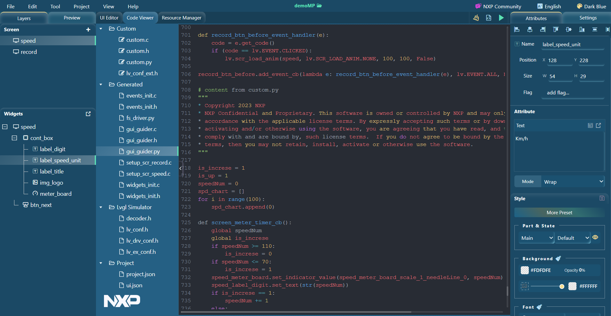

tutoeials
experience_with_micropython_in_gui_guider
generate_code
Generate code
When the
Generate code
button on the GUI Guider UI is clicked, the code for both C and Python is generated separately. The MicroPython file
gui_guider.py
is available under the folder
<GUI Guider Project name>/generated
.
Figure:
View MicroPython code
